版本日期：2026-07-02
虚拟敲除（virtual knockout, virtual KO）希望在不真正做基因扰动实验的情况下，根据已有单细胞或多组学数据，预测“如果敲除某个基因或两个基因，细胞状态会怎样改变”。它的直接用途包括：优先筛选候选基因、解释调控通路、辅助设计 perturb-seq/CRISPR 实验，以及在实验成本较高或样本很少时先做计算预判。
现有方法通常依赖较大规模 perturbation 数据，或者需要训练较复杂的深度生成模型。我们的 VKX 方法面向一个更实际的场景：样本量不大、算力有限，但希望尽可能利用 RNA、蛋白、ATAC、motif、peak、通路和调控网络等多种信息。VKX 的设计目标不是从零学习一个完全自由的细胞生成模型，而是先学习一个稳定、可解释的 KO 方向，再在这个方向附近生成虚拟 KO 后的细胞状态。
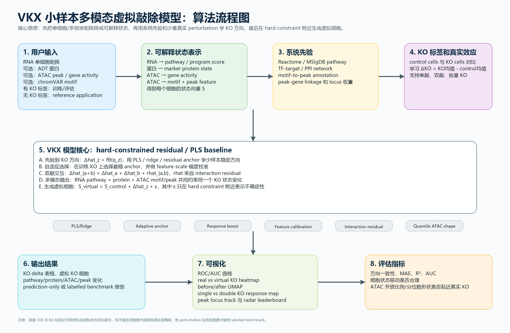
图 1 展示 VKX 的整体流程。用户可以输入普通单细胞 RNA 矩阵，也可以输入多模态数据，例如 RNA+ADT、RNA+ATAC、RNA+ADT+ATAC。若数据带有 KO 标签，则可以训练和评估模型；若是普通 10X 数据且没有 KO 标签，则只能做 reference model 应用，即把已训练好的 KO 方向应用到该数据上，展示预测的细胞状态变化，但不能在该数据内部报告真实准确率。
VKX 面向普通用户时，输入应尽量接近他们已有的数据格式：
VKX 的输出分成两类：
原始表达矩阵通常维度高、噪声大，而且不同数据集之间基因覆盖不一致。VKX 先把细胞表示为可解释状态向量：
S_i = [pathway scores, program scores, protein scores, ATAC gene activity,
motif activity, selected peak features]
其中 S_i 表示第 i 个细胞的状态。RNA-only 数据也不直接使用 SVD 作为主要输入，而是默认转成 pathway/program score；多模态数据则在这个基础上拼接 protein、ATAC、motif 或 peak-level feature。这样做的好处是：每个预测变化都可以对应到一个通路、蛋白 marker、调控 motif 或基因组 peak，解释性更强。
如果数据带有 perturbation 标签，对每个 KO 条件 z，真实平均效应定义为：
Delta_z = mean(S_i | KO = z) - mean(S_i | control)
这里 Delta_z 是模型要学习和预测的目标。它可以是一组 pathway score 的变化，也可以包含蛋白、ATAC、motif 或 peak 的变化。
每个 KO 基因或基因组合会被表示为先验向量：
q_z = [pathway membership, TF-target links, PPI neighborhood,
motif-to-peak weights, peak-gene linkage weights]
例如敲除一个转录因子时，TF-target 和 motif-to-peak 先验会告诉模型哪些靶基因、motif 和 peaks 更可能变化；敲除通路相关基因时，Reactome/MSigDB/PPI 先验会给出通路层面的方向约束。
VKX 的核心预测形式是：
Delta_hat_z = f_theta(q_z)
其中 f_theta 不是一个完全自由的深度生成器，而是由 PLS、ridge、residual anchor、feature-scale calibration 和 response boosting 组成的稳定 baseline。它的核心思想是：在小样本条件下，先预测 KO 造成的平均状态移动方向，再根据训练 KO 的误差做有限校正。
对于单个基因敲除：
Virtual_KO_state = Control_state + Delta_hat_z
对于双基因敲除，VKX 不只做简单相加，而是加入 interaction residual：
Delta_hat_(a+b) = Delta_hat_a + Delta_hat_b + r_hat_(a,b)
其中 r_hat_(a,b) 表示两个 KO 基因之间的非加性效应。它由已见过的双敲数据、网络距离、通路重叠、TF/target 关系和响应残差共同估计。
在得到平均 KO 方向后，VKX 生成 cell-level 虚拟 KO 细胞：
S_virtual_i(z) = S_control_i + Delta_hat_z + epsilon_i
其中 epsilon_i 不是自由扩散模型随意生成的噪声，而是被限制在 hard constraint 附近的不确定性范围。也就是说，模型首先保证虚拟细胞整体沿着预测 KO 方向移动，再学习单细胞之间的残差差异。
对于 ATAC peak，VKX 进一步做 zero-inflated / quantile shape calibration：
open_rate_virtual ≈ open_rate_true_KO
quantiles_virtual ≈ quantiles_true_KO
这一步是为了解决 ATAC peak 单细胞分布稀疏、零值多、形状不连续的问题。它不仅校准均值和方差，也校准 peak 的开放比例和分位数形状。
| 数据集/任务 | 模态 | KO 类型 | AUC | 方向一致性 | MAE | 分布改善 | 改善特征比例 | 特征数 |
|---|---|---|---|---|---|---|---|---|
| Papalexi ECCITE-seq | RNA + ADT | 单敲 | 0.878 | 0.879 | 0.424 | 0.144 | 0.821 | 28 |
| Norman Perturb-seq | RNA program | 双敲 | 1.000 | 0.960 | 0.127 | 0.241 | 0.600 | 5 |
| HMPCITE-seq GSE243244 | RNA + ADT + GDO-derived | 双敲 | 0.978 | 0.976 | 0.114 | 0.548 | 0.875 | 32 |
| scPerturb ATAC K562 | ATAC peak + prior | 单敲/peak-level | 0.674 | 0.771 | 0.061 | 0.166 | 0.788 | 240 |
需要特别说明：Norman 双敲任务的 AUC 为 1.000，但该任务当前只有 5 个 program-level 特征，因此 AUC 容易偏高，应该结合方向一致性、MAE、heatmap 和 response map 一起解释，不能单独作为“完美预测”的证据。
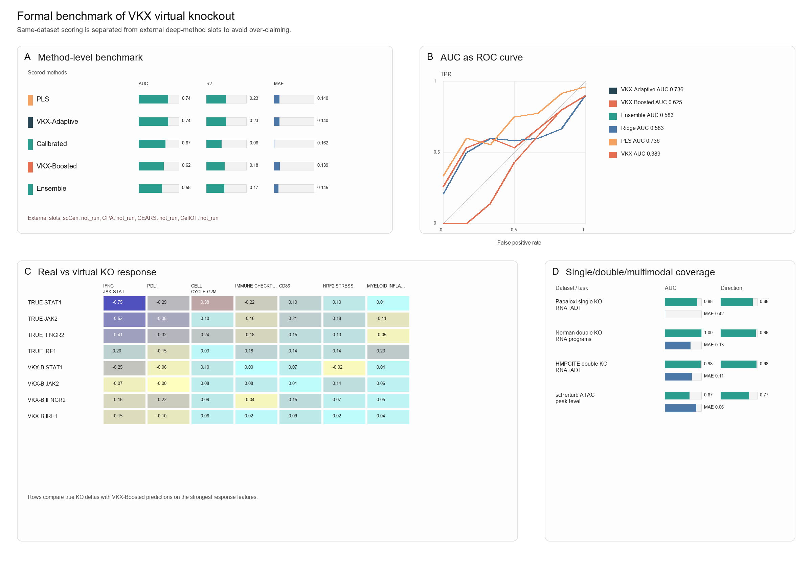
图 2 汇总了当前 VKX 的主要 benchmark 面板。整体看，VKX 在单敲、多模态双敲和 ATAC regulatory peak 任务上都能给出方向一致的预测；短板主要集中在复杂非线性双敲、MAPK/TGFB 等响应幅度较难预测的 program，以及 peak-level ATAC 分布形状。
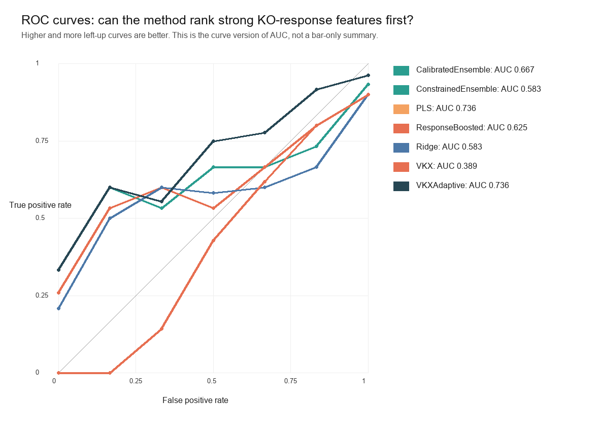
图 3 使用 ROC/AUC 曲线展示 VKX 是否能把真实变化较强的特征排在前面。AUC 高说明模型对“哪些通路、蛋白或 peak 会明显变化”的排序较好。对于特征数少的任务，AUC 应谨慎解释；对于特征数更多的 ATAC peak-level 任务，AUC 更能反映 feature ranking 能力。
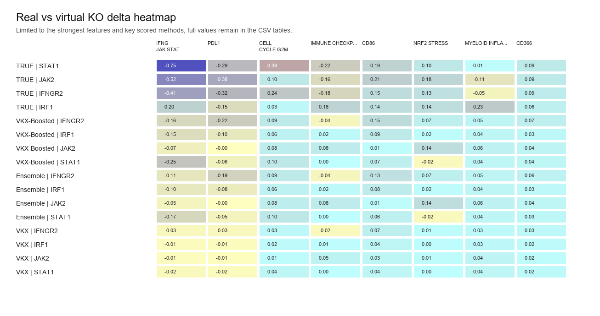
图 4 对比真实 KO 和虚拟 KO 的 feature-level delta。用户最容易从这类图中看到：敲了哪个基因，哪些 pathway/protein/peak 真实变化，VKX 是否预测出同方向、相近幅度的变化。热图比单个柱状图更适合展示虚拟敲除的生物学含义。
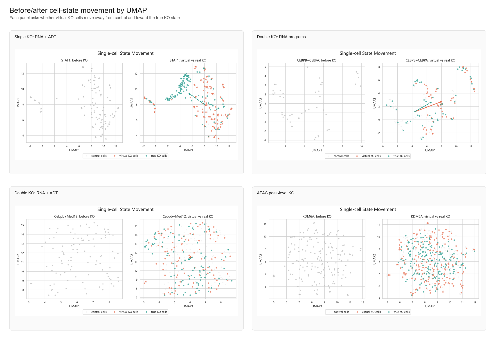
图 5 展示 control cells、virtual KO cells 和 true KO cells 在低维空间中的相对位置。理想情况下，virtual KO cells 应从 control 状态向 true KO 状态移动，而不是随机散开。UMAP 主要用于直观展示 cell-level 状态移动，不能替代定量指标。
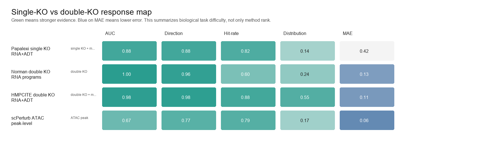
图 6 展示单敲和双敲的响应图。双敲预测中，VKX 显式建模 单敲 A + 单敲 B + interaction residual，因此可以区分加性效应和非加性效应。当前结果说明 interaction residual 能改善部分双敲任务，但复杂非线性组合仍是下一步重点。
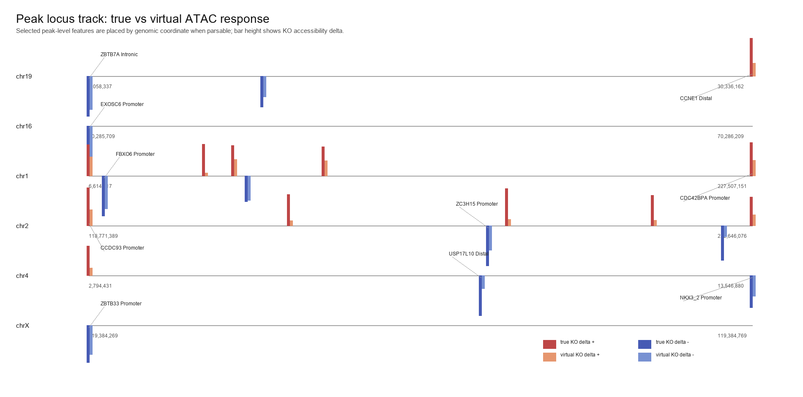
图 7 展示 peak-level ATAC 结果。VKX 不只按 peak 方差筛选，而是综合 target gene locus、motif/TF prior、marker peak、KO effect 和可及性打分。当前 ATAC 模块已经加入 quantile/zero-inflated shape calibration，使虚拟 peak 分布更贴近真实 KO 的开放比例和分位数形状。
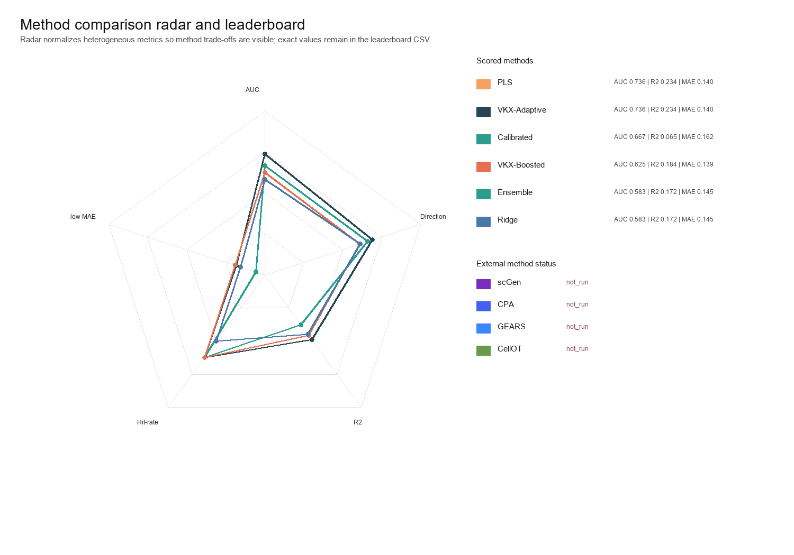
图 8 用 radar/leaderboard 概括多个指标。它适合放在论文主图或补充图中，帮助读者同时比较 AUC、方向一致性、误差、分布改善和可解释性。
上一版初稿主要围绕最新 full_benchmark_suite_v5 的论文级主图展开，因此压缩掉了前面几轮探索中的一些重要结果。为了避免读者误以为这些实验没有做过，这里把它们补成完整结果索引。
| 结果模块 | 数据/任务 | 当时解决的问题 | 当前结论 | 建议放置 |
|---|---|---|---|---|
| Papalexi/STAT1 单敲示例 | RNA + ADT, single KO | 用户到底敲了哪个基因、真实和虚拟有什么区别 | STAT1 是最清楚的单敲演示例子，适合解释输入输出 | 主文或方法示例 |
| Papalexi 单细胞 UMAP | RNA + ADT, single KO | 是否能看到 KO 前后细胞状态移动 | 多数 KO 可看到 control 向 true KO 方向移动，但不同 KO 稳定性不同 | 主文图或补充图 |
| Norman 双敲交互 | RNA program, double KO | 双敲是否只是单敲相加 | interaction residual 能改善部分双敲，MAPK/TGFB 仍困难 | 主文结果/局限 |
| 多数据集 heatmap | Papalexi/Norman/Datlinger/Dixit | RNA-only 是否完全不能做 | RNA-only 很多 KO 方向是对的，但幅度和分布形状较难 | 补充图 |
| pathway 幅度校准 | RNA-only pathway/program | 方向对但幅度不对怎么办 | Datlinger 和 Dixit 经校准后更接近真实 KO；Papalexi 多模态不一定需要强制校准 | 方法补充 |
| deep generator 对比 | VAE/flow/diffusion | 复杂生成模型是否自然更好 | 小样本下自由生成模型反而更差，因此确定 hard constraint 策略 | 方法动机 |
| hard uncertainty band | residual baseline + uncertainty | 是否可以输出不确定性范围 | 可以作为置信区间，但不应改变 KO 主方向 | 方法补充 |
| reference model | 普通 10X / 无 KO 标签应用 | 没有 KO 标签的数据能不能用 | 可以做 prediction-only / reference application，不能报告真实准确率 | 软件接口 |
| ATAC/chromVAR/peak-level | scPerturb ATAC K562 | ATAC 加入后如何解释 peak 层面变化 | motif/TF/peak-gene prior 和 quantile calibration 有帮助，但 peak-level 仍难 | 主文或补充 |
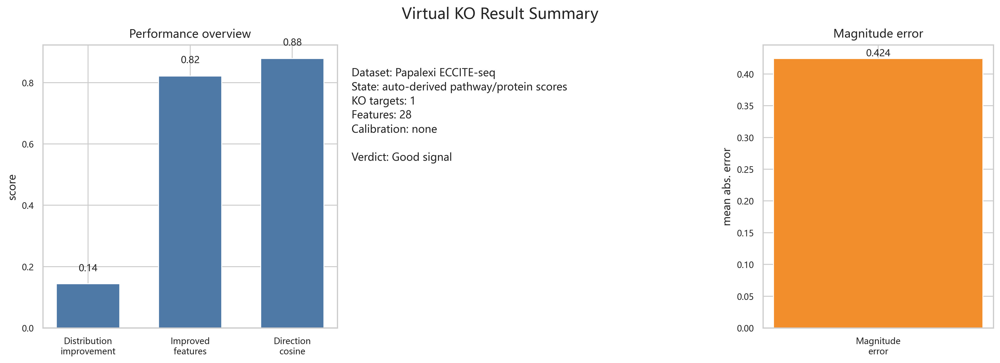
图 9 是早期整理出的 STAT1 单基因敲除示例。这个图的价值不只是指标，而是能让读者看到完整故事：输入的是 Papalexi ECCITE-seq 的 RNA+ADT 数据，目标是 STAT1 KO，输出是 pathway/protein 层面的真实 KO 变化、虚拟 KO 变化和误差。
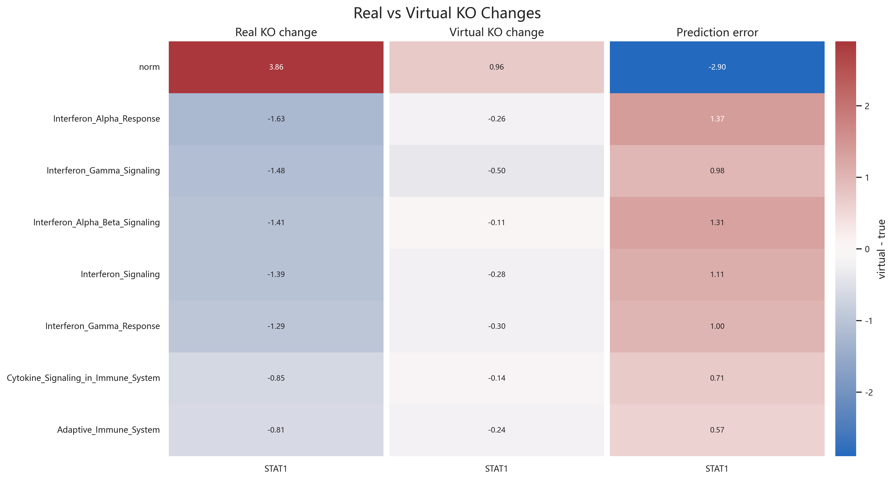
图 10 是 STAT1 的 real vs virtual heatmap。它比单个 AUC 或 MAE 更容易解释：如果真实 KO 和虚拟 KO 的颜色方向一致，说明模型预测到了敲除后的主要状态移动；如果误差列颜色较浅，说明幅度也比较接近。
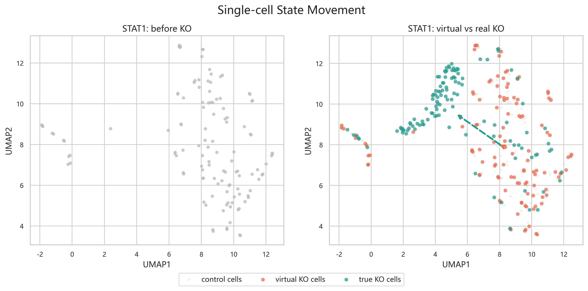
图 11 展示 STAT1 KO 的 before/after UMAP。它回答的是“虚拟敲除后的细胞是不是从 control 状态往真实 KO 状态移动”。这个图适合放在方法示例中，帮助非生信读者理解 cell-level virtual KO 的含义。
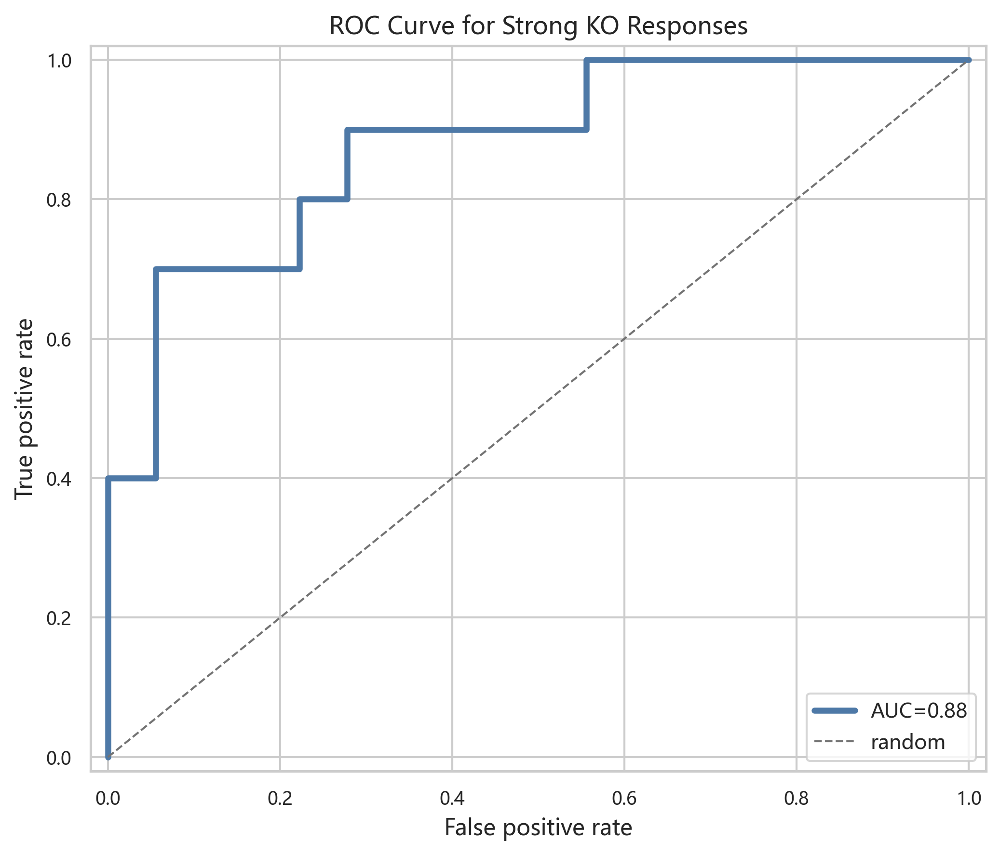
图 12 是 STAT1 的 ROC/AUC 曲线。它比柱状 AUC 更规范，说明 VKX 是否能把强响应 pathway/protein 排在前面。
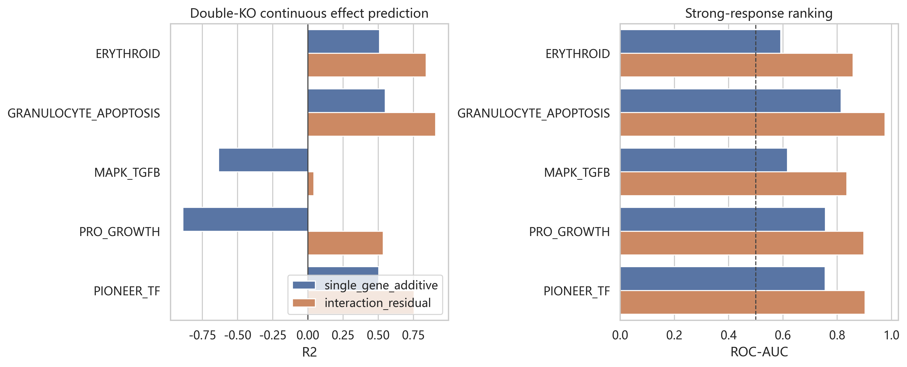
图 13 是 Norman 双敲 interaction residual 的核心结果。它说明双敲不能简单理解为“单敲 A + 单敲 B”，有些组合存在非加性效应。VKX 当前用 residual interaction 项修正双敲预测：
Delta_hat_(A+B) = Delta_hat_A + Delta_hat_B + r_hat_(A,B)
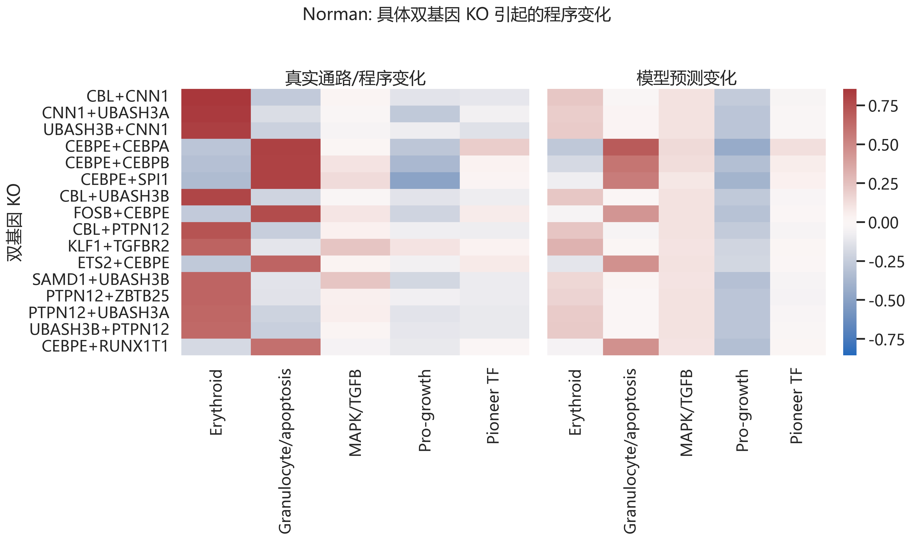
图 14 是 Norman 双敲的整体展示。CEBPB+CEBPA 这类组合表现较好，而 MAPK/TGFB 相关 program 是当前短板。这个结果应该在初稿里诚实写出：VKX 已支持双敲，但复杂非线性通路仍需要加强。
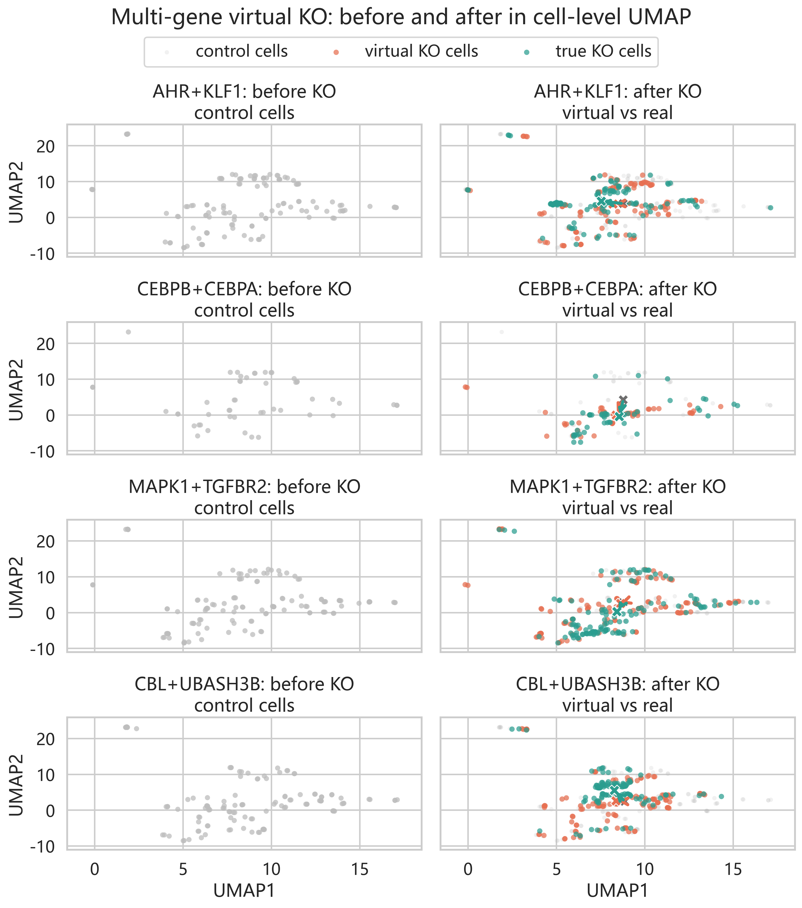
图 15 是 Norman 双敲 cell-level UMAP。它展示虚拟 KO 细胞在状态空间中的移动是否接近真实双敲细胞。该图适合做补充结果，说明模型不只是预测平均 delta，也输出 cell-level 状态。
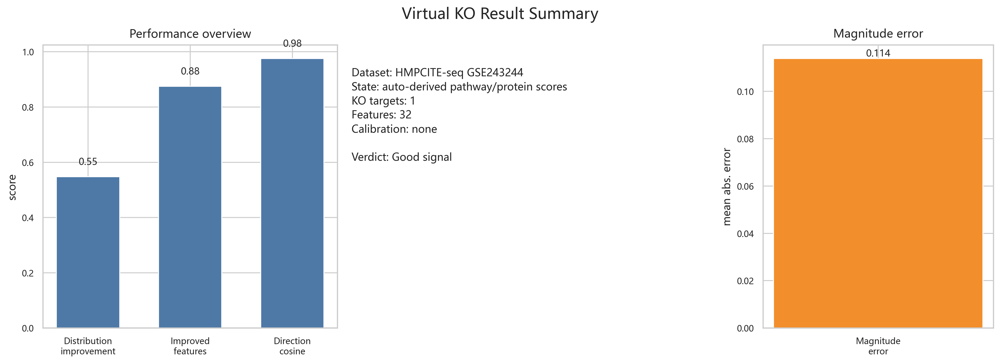
图 16 是 HMPCITE-seq 多模态双敲结果。它是当前最能支持“多模态让虚拟敲除更可靠”的证据之一，因为输入包含 RNA、ADT 以及 guide-derived perturbation labels。
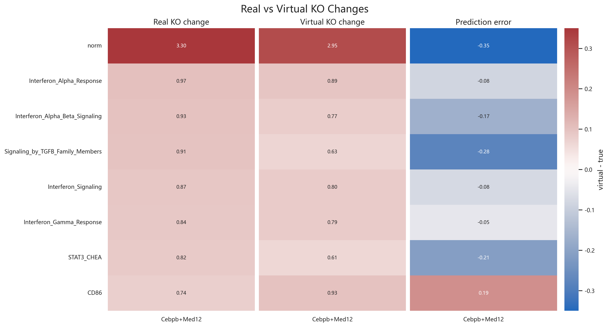
图 17 展示 HMPCITE 的真实 KO 与虚拟 KO heatmap。当前结果中，HMPCITE 的 AUC、方向一致性和分布改善都比较高，说明 RNA pathway 与 ADT 状态共同约束时，双敲预测更稳定。
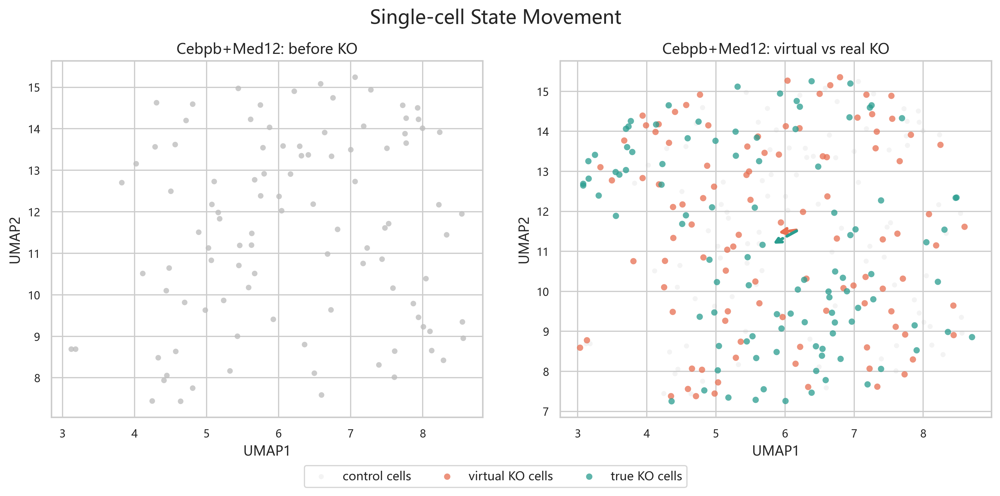
图 18 展示 HMPCITE 的 UMAP 状态移动。它应该和 heatmap 一起解释：heatmap 说明 feature-level 是否预测对，UMAP 说明 cell-level 状态是否移动到合理区域。
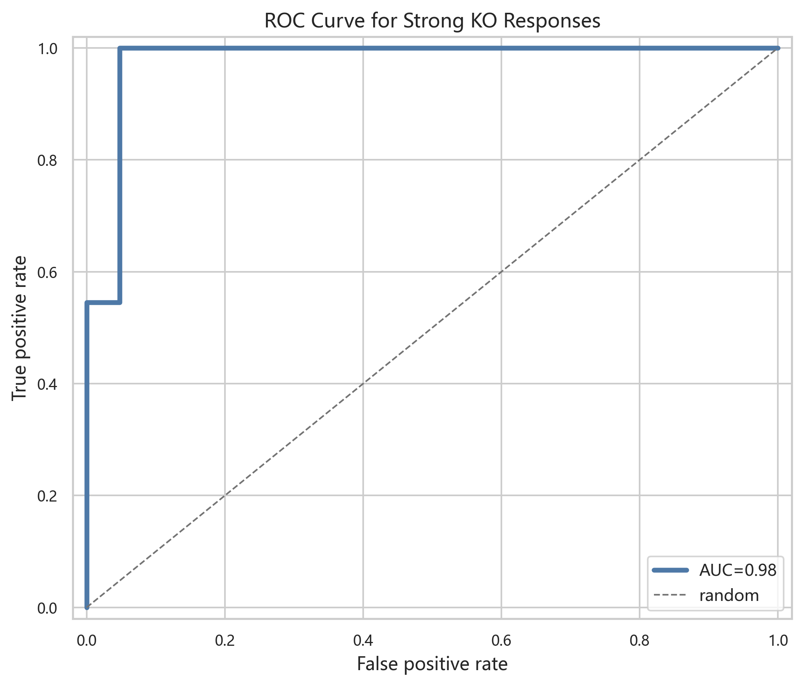
图 19 是 HMPCITE 的 ROC/AUC 曲线。它适合作为多模态 benchmark 的主结果之一。
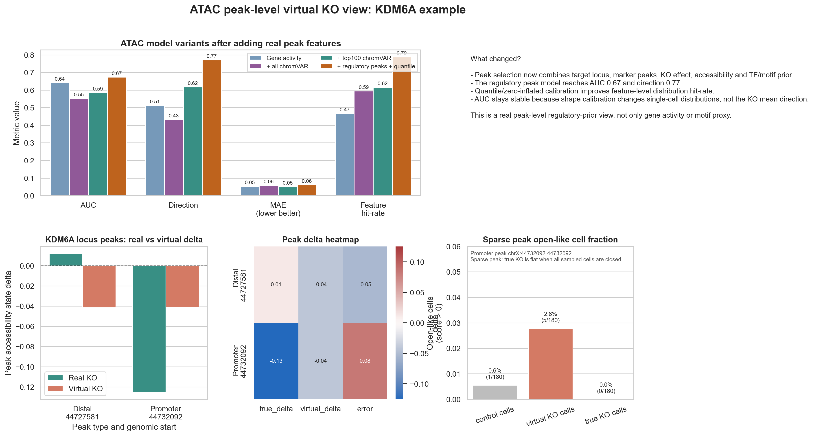
图 20 是 ATAC peak-level 可视化。它补上了一个重要点：如果方法声称支持 ATAC，就不能只展示 gene activity 或 motif proxy，还应该展示 peak locus、真实 peak delta、虚拟 peak delta 和单细胞 peak 分布。当前 ATAC 模块已经加入 target locus、motif/TF prior、peak-gene linkage、KO effect、可及性和 quantile/zero-inflated calibration，但 peak-level 分布仍比 RNA/protein 更难。
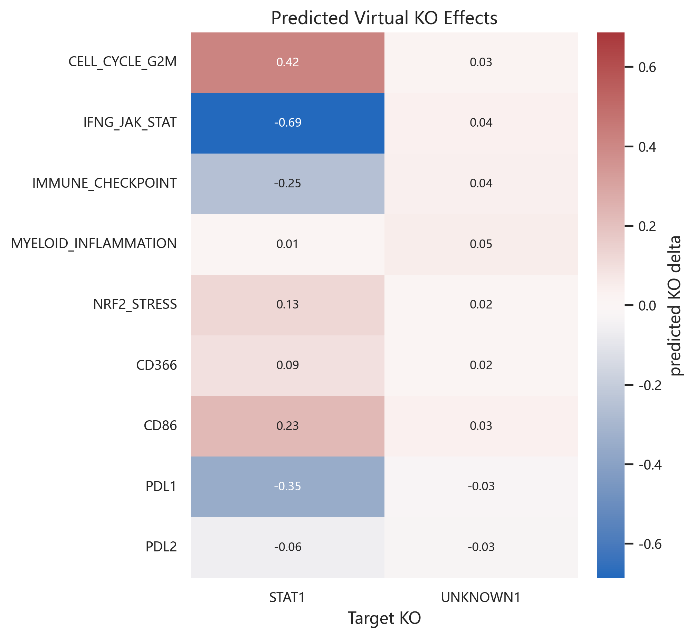
图 21 展示 reference model 在无标签数据上的 predicted KO delta。这里必须明确：普通 10X 数据如果没有 KO 标签，可以输入 VKX 做状态转换和虚拟 KO 应用，但不能在该数据内部计算真实 AUC、MAE 或 R²。
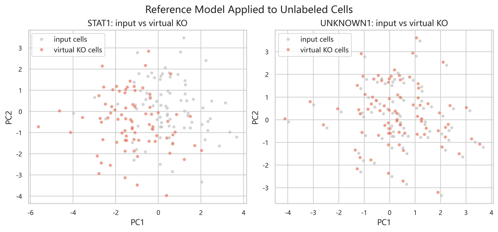
图 22 展示 reference application 后的输入细胞与虚拟 KO 细胞状态移动。它的作用是“预测展示”，不是准确性验证。
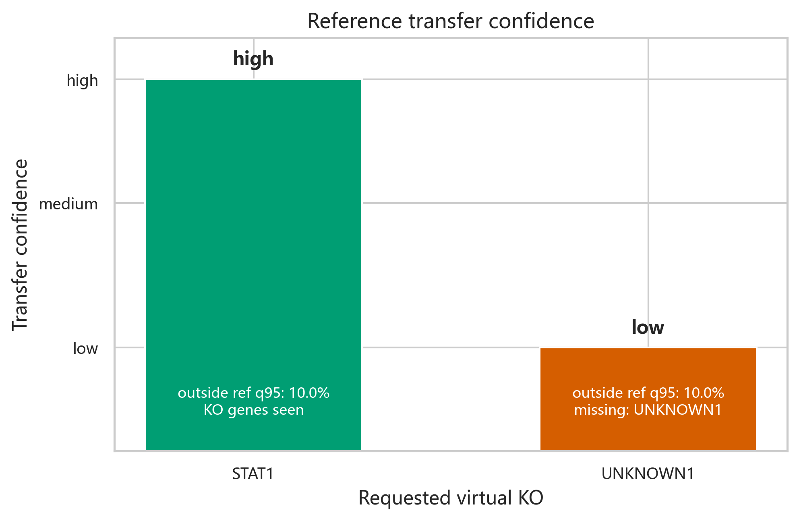
图 23 展示 reference transfer confidence。对无标签数据，置信度比准确率更重要，因为没有真实 KO ground truth。
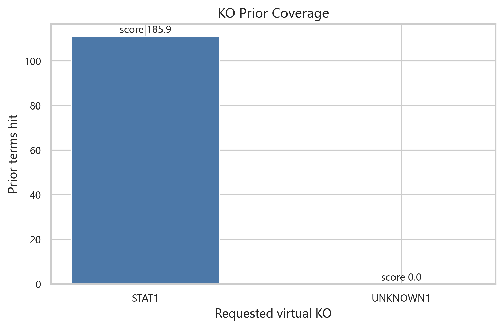
图 24 展示 prior coverage。对于未见基因或普通 10X 应用，先验覆盖越弱，结果越应该标记为低置信度。
早期我们比较过 residual baseline、conditional VAE、flow matching 和 diffusion。结论很关键：在当前小样本条件下，直接训练自由生成模型没有超过 residual baseline，反而更容易偏离 KO 主方向。因此现在的策略是：
residual / PLS baseline = hard constraint
VAE / flow / diffusion = 只学习 hard constraint 附近的不确定性
这个结果应该写进方法动机：我们不是因为不知道深度生成模型，而是因为实验证明当前数据规模下更稳的做法是先固定 KO 方向，再建模局部不确定性。
早期多数据集实验显示，RNA-only 数据不是不能做虚拟敲除。Datlinger 和 Dixit 中很多 KO 的方向预测较好，但幅度和单细胞分布形状偏差较大。因此我们加入了 pathway/program score 的幅度校准：
S_virtual = S_control + alpha * Delta_hat
其中 alpha 被限制在合理范围内，只校准变化大小，不允许反转 KO 方向。这个结果适合放在补充方法中，用来解释为什么 RNA-only 默认也转成 pathway/program score，并推荐使用 --calibrate auto。
当前 benchmark 框架已经为 ridge、PLS、additive、scGen、CPA、GEARS、CellOT 预留统一接口。ridge、PLS 和 additive 可以作为轻量 baseline 直接运行。scGen、CPA、GEARS 和 CellOT 当前在本机环境中的状态不是“结果差”，而是“未完成可复现实跑”：
| 方法 | 当前状态 | 解释 |
|---|---|---|
| scGen | package_missing | pip 包可用，但当前环境未安装和运行 |
| CPA | package_missing | pip 包可用，但当前环境未安装和运行 |
| GEARS | package_missing | pip 包可用，但当前环境未安装和运行 |
| CellOT | source_only_not_on_pip | 没有标准 pip 包，需要按源码流程单独接入 |
因此，现阶段不能声称 VKX 已全面优于这些深度方法。更严谨的说法是：VKX 当前已经形成一个小样本、多模态、可解释、可视化完整的稳定 baseline；下一步需要在同一数据划分、同一指标和同一预处理下正式运行 scGen/CPA/GEARS/CellOT，形成公平横向比较。
我们提出 VKX，一种面向小样本多模态单细胞数据的可解释虚拟敲除框架。VKX 首先将 RNA、蛋白和 ATAC 数据统一映射到 pathway/program、protein marker、motif activity 和 peak-level regulatory feature 等可解释状态空间；随后利用 Reactome/MSigDB、TF-target、PPI、motif-to-peak 和 peak-gene linkage 等系统先验学习 perturbation 后的状态变化方向。与完全自由的深度生成模型不同，VKX 采用 hard-constrained residual/PLS baseline，先稳定预测 KO 平均效应，再在该方向附近生成 cell-level virtual KO states。该设计减少了小样本条件下的过拟合风险，并使预测结果可以直接通过 heatmap、UMAP、ROC/AUC、response map 和 peak locus track 解释。
在现有 benchmark 中，VKX 在 Papalexi ECCITE-seq 单敲 RNA+ADT 任务上达到 AUC 0.878 和方向一致性 0.879；在 HMPCITE-seq 多模态双敲任务上达到 AUC 0.978 和方向一致性 0.976；在 scPerturb ATAC peak-level 任务上达到 AUC 0.674 和方向一致性 0.771。结果表明，多模态信息和系统调控先验可以提高虚拟敲除预测的稳定性和可解释性，尤其是在样本量有限时。与此同时，复杂双敲非线性、MAPK/TGFB program 和稀疏 ATAC peak 分布仍是后续优化重点。